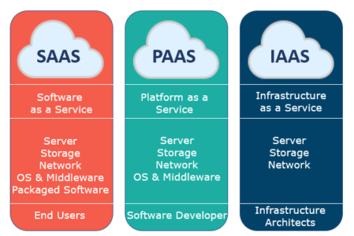

Cloud computing refers to the delivery of computing services—such as servers, storage, databases, networking, software, and more—over the internet ("the cloud") rather than through local servers or personal devices. cloud computing allows businesses and individuals to access and manage their data and applications more efficiently, securely, and cost-effectively. Here's a breakdown of key concepts: / Click to learn more
-
Introduction : -
Types of Cloude Computing Services -
Infrastructure as a Service (IaaS):
Provides virtualized computing resources over the internet. Users can rent virtual machines, storage, and networking resources, but are responsible for managing the operating systems and applications they run on these resources.
-
Platform as a Service (PaaS):
Delivers hardware and software tools (often for software development) through the cloud. It abstracts much of the infrastructure management, allowing developers to focus on building and deploying applications without worrying about managing the underlying systems.
Example: Google App Engine, Microsoft Azure App Services
-
Software as a Service (SaaS):
Provides fully functional software applications over the internet, typically on a subscription basis. Users don’t need to install or maintain the software; they simply access it through a web browser.
Example: Google Workspace, Microsoft 365, Salesforce

-
Infrastructure as a Service (IaaS):
-
Benefits Of cloud computing -
Cost Efficiency:
Cloud computing reduces the need for businesses to invest heavily in physical hardware and infrastructure, shifting to a pay-as-you-go model.
-
Scability :
Cloud services can easily scale up or down based on demand, making it ideal for businesses with fluctuating workloads.
-
Flexibility:
Cloud environments allow users to access resources and applications from anywhere with an internet connection.
-
Security:
Many cloud providers offer robust security measures such as encryption, access controls, and backup services, although security is also a shared responsibility between the provider and the user.
-
Cost Efficiency:
-
Cloud Computing Use Cases -
Data Storage and Backup:
Cloud storage services (e.g., Dropbox, Google Drive, Amazon S3) provide off-site backup and scalable storage solutions.
-
Big Data and Analytics:
Cloud providers offer powerful tools for analyzing large datasets, making it easier to derive insights without requiring large-scale on-premises hardware.
-
Disaster Recovery:
Cloud computing can support disaster recovery solutions, providing business continuity in case of local hardware failures or other disruptions.
-
Data Storage and Backup: